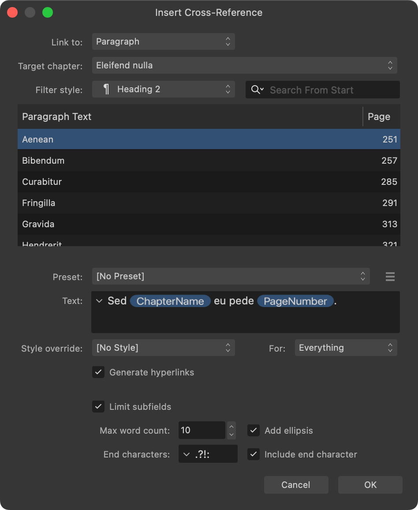

A cross-reference's text adopts the formatting applied at its position in document text. The formatting can be overridden with your choice of character style, e.g. to add emphasis that distinguishes the cross-reference from other text. Additionally, you can limit the amount of text and which punctuation is displayed by a cross-reference's subfields.

Formatting and other options on the Insert Cross-Reference dialog.
The following formatting options are available when inserting or editing cross-references:
Style override—Select an existing character style to override formatting at the cross-reference's position in document text, or apply no override style. From this option, you can also create a new character style or edit the currently selected one.
For—Select whether the Style override is applied to Everything (all of the cross-reference's text), All Fields within the text, or only Text Fields or Number Fields.
Limit subfields—Check to use the following options to control the length and punctuation of subfield values. Uncheck to display subfield values in full.
Max word count—Enter the maximum number of words that each subfield will display, if an end character is not encountered sooner.
Add ellipsis—Check to display an ellipsis (…) at the end of a subfield's text if it has been truncated because the maximum word count was reached. Uncheck to omit the ellipsis.
End characters—Enter characters that, if any is encountered, will cause the subfield's text to be truncated, even if the maximum word count has not been reached.
Include end character—Check to include an encountered end character at the end of the text. Uncheck to omit the character.
To limit text displayed by arbitrary-length subfields:
Check Limit subfields.
Set Max word count, Add ellipsis, End characters and Include end character as required.